Also published on Substack.
In this guide
- Before you start
- Step 1: Add the chapter as a source
- Step 2: Open Reports and choose Interactive
- Step 3: Paste the prompt
- Step 4: What the report gives you
- Step 5: Add a card to the report
- Step 6: Choose the right card for the right job
- Check before class
- When it goes wrong
- Using it in the live class
- My verdict
- Sources
I teach maths at Suditi Global Academy, Mainpuri, and every new chapter starts with the same question: how will I teach it, period by period? This time I handed that first draft to Gemini Notebook's Interactive Reports. In about 90 seconds it turned one NCERT Class IX chapter into a six-period teaching workflow. Here are the clicks I made, the prompt I used, and the checks I ran before taking it into class.
Before you start
All you need is a Google account that can use Gemini Notebook, the chapter PDF from NCERT, and about ten minutes. Three things I noted before starting:
The Class IX book has changed. Class IX Maths is now Ganita Manjari Part I, with 8 chapters. I used Chapter 4, Exploring Algebraic Identities. Chapter numbers and titles differ from the old 12-chapter book, so check yours against the new one.
I keep it private. NCERT allows its books to be downloaded as a textbook or reference, but forbids republishing or hosting them online. I use the PDF only inside my own notebook and I do not embed it in this blog.
I use the official PDF from the NCERT textbooks page, not a third-party copy.
Step 1: Add the chapter as a source
I opened Gemini Notebook, clicked New notebook, then Add sources. You can choose Upload files for a PDF you have downloaded, or Websites to paste the chapter's web address. I pasted the address of the official NCERT chapter PDF.

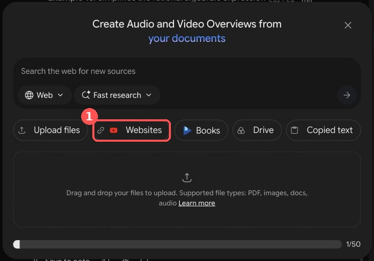
I waited for the spinner beside the source to finish; mine took about 30 seconds. The notebook then named itself after the chapter, which was my quick sign that it had read the right file. I renamed it to something I would recognise: "Class IX Maths - Exploring Algebraic Identities - Teaching Workflow".
Step 2: Open Reports and choose Interactive
In the Studio panel on the right, I clicked Reports (marked "New!").

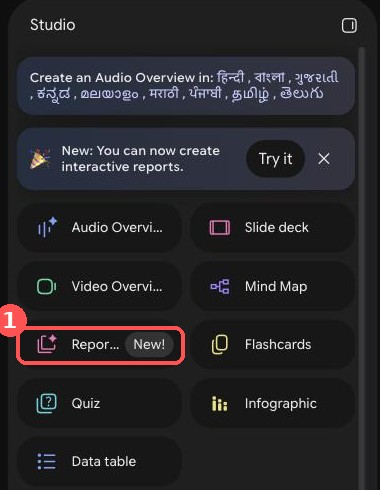
In the Create report dialog I picked Interactive (1) rather than Document. Interactive reports embed Studio content such as infographics and quizzes between the sections; Document is text only. Then I clicked the pencil icon (2) on the Learning overview template to open the instruction box.

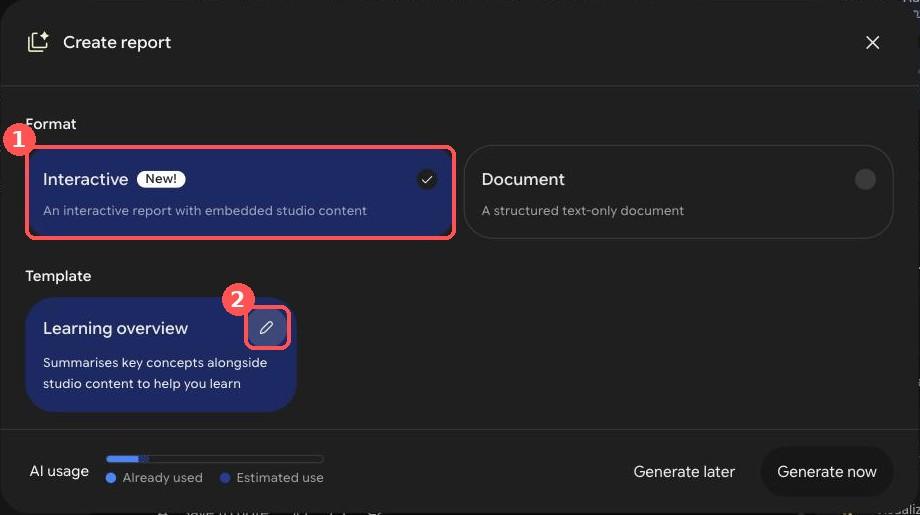
Step 3: Paste the prompt
I chose the language and pasted my instruction into "Describe the report that you want to create". This step decides how useful the result is: I named the periods, the board-work order, the hinge questions and the exercise mapping, and the report followed them.

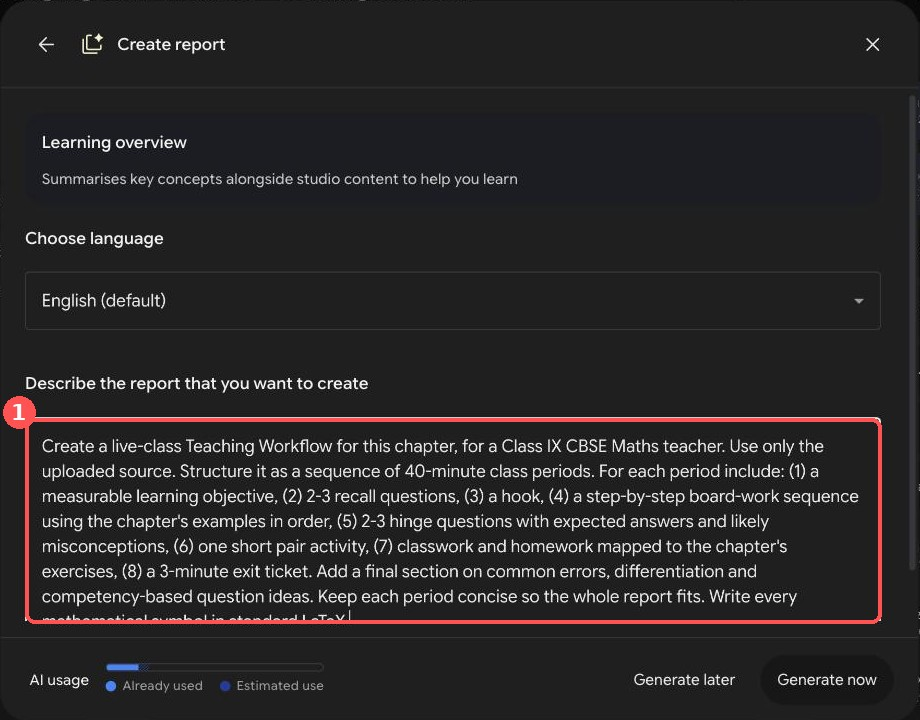
The full prompt I recommend:
Create a live-class Teaching Workflow for this chapter, for a Class IX CBSE Maths teacher. Use only the uploaded source. Structure it as a sequence of 40-minute class periods. For each period include: (1) a measurable learning objective, (2) 2-3 recall questions, (3) a hook, (4) a step-by-step board-work sequence using the chapter's examples in order, (5) 2-3 hinge questions with expected answers and likely misconceptions, (6) one short pair activity, (7) classwork and homework mapped to the chapter's exercises, (8) a 3-minute exit ticket. Add a final section on common errors, differentiation and competency-based question ideas. Keep each period concise so the whole report fits. Write every mathematical symbol in standard LaTeX.The last two sentences are fixes. My first run, without them, was cut off and printed some symbols wrongly (see "When it goes wrong" below). I ran the original wording and then a narrower follow-up; I have not yet run this exact combined version, so test it on your own chapter.
Two shorter versions you can adapt:
Create a one-period (40-minute) live-class Teaching Workflow for [topic or examples] from this chapter, for a Class IX CBSE Maths teacher. Include a learning objective, 2 recall questions, a hook, a board-work sequence using the chapter's examples in order, 2 hinge questions with expected answers and misconceptions, one pair activity, classwork and homework mapped to the chapter's exercises, and a 3-minute exit ticket. Use only the source. Write all symbols in standard LaTeX.Create a single 40-minute revision lesson for this chapter for Class IX CBSE Maths. Use only the source. Include a 5-minute retrieval quiz, the three or four ideas students most often get wrong (with a corrected worked example for each), a 15-minute mixed-practice sequence ordered from easy to hard using questions from the chapter's exercises, a 5-minute error-spotting task, differentiation for support and extension, and a 3-minute exit ticket. Write all symbols in standard LaTeX.Then I clicked Generate now. My first report took about 80 seconds.
Step 4: What the report gives you
The finished report appeared in the Studio list. I opened it: a contents list on the left, then one section per period. It suggested six 40-minute periods for the chapter.

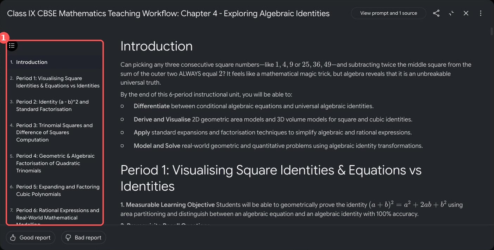
Each period follows the eight headings in the prompt: learning objective, recall questions, hook, board-work sequence, hinge questions, pair activity, classwork and homework mapped to exercise sets, and an exit ticket. Here is Period 5, where the cubic identities are worked in textbook order and the hinge questions come with expected answers and the misconception to listen for.

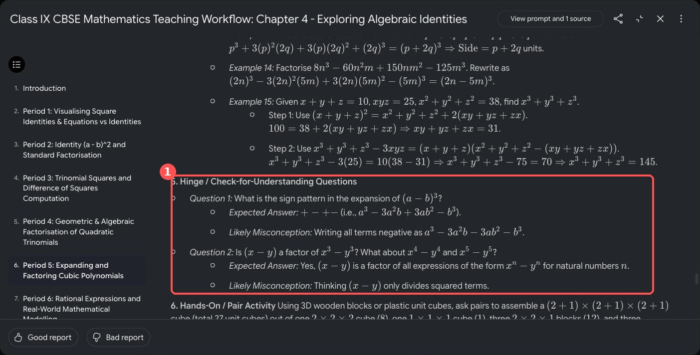
Step 5: Add a card to the report
Below each period the report offers a "Recommended" card: infographic, flashcards, slide deck, mind map, video or quiz. Clicking Add turns the suggestion into real material.

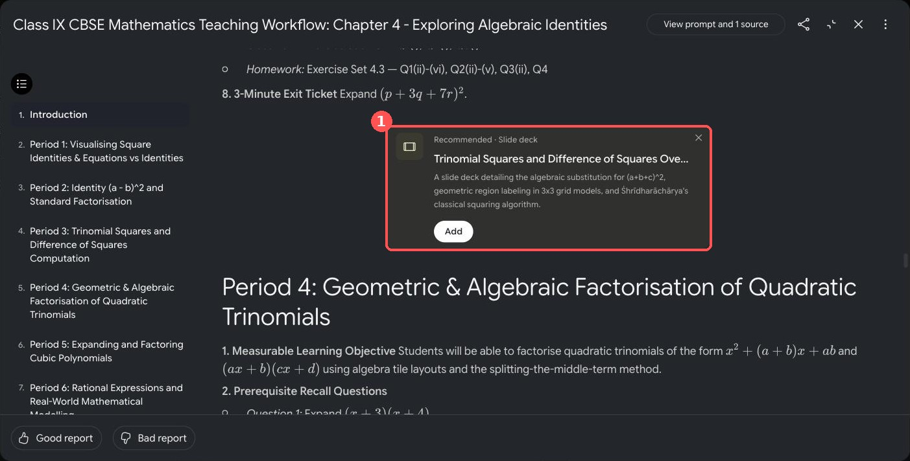
Add opens a Customise dialog with the description already filled in. For a slide deck I could choose Detailed deck or Presenter slides, the language, the length (Short or Default) and the sources, then click Generate now.

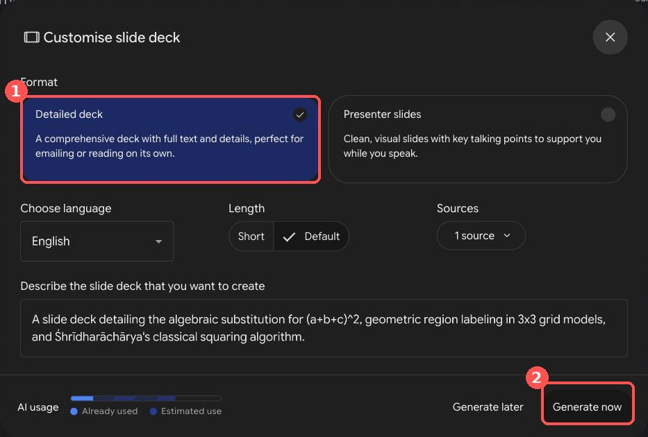
I generated the Period 1 infographic. It took about two to three minutes and appears inside the report and as its own item in the Studio list. The area model of (a + b)² is correct, and so is the equation example: x² − 1 = 24 gives x = ±5.

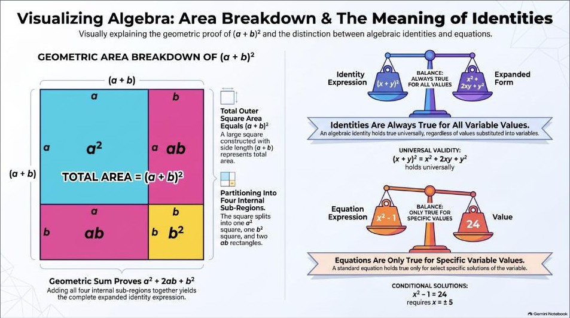
That is the infographic. I tried the other cards too; Step 6 says which one I would use where.
Step 6: Choose the right card for the right job
You do not need every card in every lesson. A card earns its place only at the moment in the period where it saves you time. I tried four more cards from the Studio panel, where the same tiles open the same Customise dialogs without a report, so you can type your own topic. Here is what I would use where.
| Card | Best moment | What I got | My verdict |
|---|---|---|---|
| Flashcards | First 5 minutes: recall | 50 cards on the default setting | Choose Fewer for one period |
| Quiz | Exit ticket or homework check | 10 questions; question 1 correct | Check all ten before using |
| Mind map | End of the chapter: revision board | 5 main branches | Good overview, keep it for revision |
| Slide deck | Before class: a projector-ready start | 9 slides in about 8 minutes; PDF and PowerPoint downloads | Most class-ready, but slide 6 had a formula slip: check every slide |
| Video | At home, for a student who missed the period | Not generated | Not a live-class tool |
Flashcards. I generated cards on the Period 1 identity. The default setting, Standard, gave 50 cards, far more than one period needs, so choose Fewer. Card 1 asks "What is the defining characteristic of an algebraic identity?" and flips with See answer. I could not flip through the rest in my session, so I have not checked the other 49.

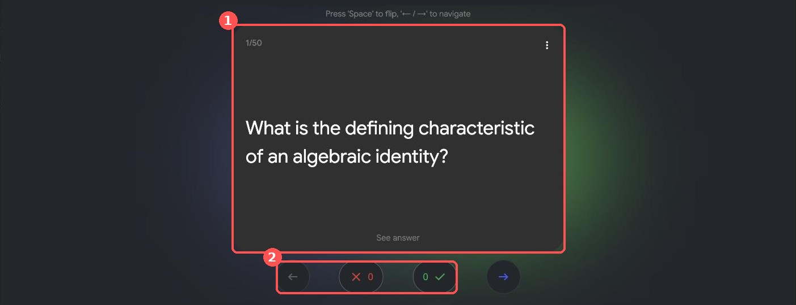
Quiz. Standard gave 10 questions. Question 1 asks for the expansion of (5x + 2y)². Option C, 25x² + 20xy + 4y², is correct, and the other options are the slips students really make: coefficients not squared (A), a wrong middle term (B) and no middle term at all (D). I could view only the first question, so I would check the other nine before using it.

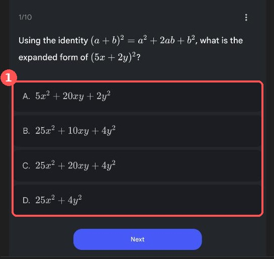
Mind map. I asked for the whole chapter as a revision map. It opened with five branches: Introduction and Concepts, Standard Identities, Geometric Models & Visualisation, Factorisation Techniques, and Applications. Each branch has an arrow to open it. I could not open the sub-branches in my session, so I have not checked what sits under them.

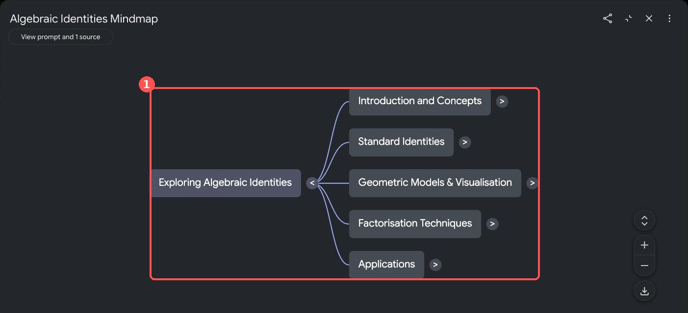
Slide deck. I asked for Presenter slides, Short length, for Period 1. It took about 8 minutes, much longer than the other cards, and gave nine slides called "The Blueprint of Algebra": the area model of (a + b)², two numerical tests (negative integers, then fractions) and a closing slide on equation versus identity. In the notebook the deck can be revised (the Revise button), played as a presentation, and downloaded as a PDF or PowerPoint file. I only opened the download menu; I did not download anything.

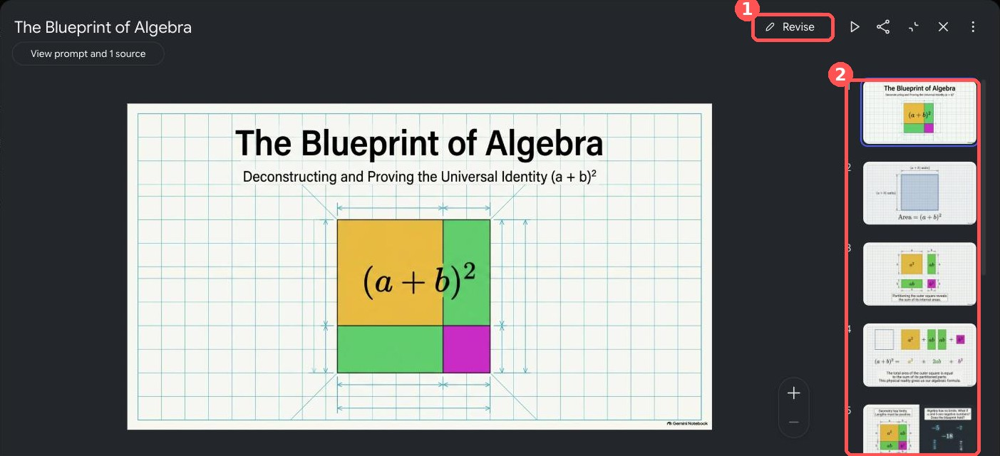
I checked the maths slide by slide. Slides 7 and 8 are right: (−2/3 + 3/4)² and its expansion both give 1/144, and x² − 1 = 24 gives x = ±5. Slide 6 has a mistake in a label: the right-hand side is written a² + ab + 2ab + b², with an extra ab. The steps underneath (4 + 12 + 9 = 25) are correct, so only the label is wrong, but a student who reads the label would copy the error. I also saw a stray brace in "(a + b) units}" on slide 2, and I did not examine slides 3 to 5 closely. Open every slide before you project the deck.

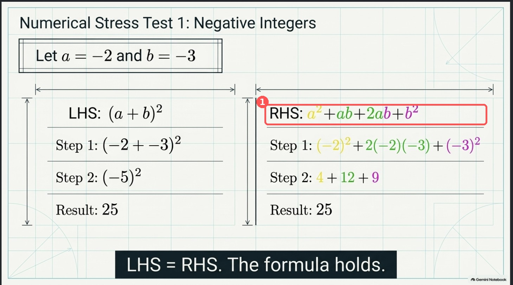
Video. I did not generate a video. It is listed in the Studio panel as Video Overview, so I cannot say how good it is. My view is that a video suits homework or a student who missed the period better than a live class. If you try one, watch all of it first and check the maths.
Right tool, right place
Before class: the report for the plan, and a slide deck or infographic only if you will project it.
First 5 minutes: flashcards on Fewer, in place of your recall questions.
Board work: none of them. My own board and the textbook's figures do the teaching.
Last 3 minutes, or homework: the quiz.
End of the chapter: the mind map as a revision board.
A student who missed the period: the video, if you have checked it.
One report plus one card per period is plenty. If the report already gives you the thing, such as an exit ticket, skip the card.
Check before class
I recomputed every worked number in the report, and they were correct: for example 29² = 841, 119² = 14161, Example 15 giving x³ + y³ + z³ = 145, and the pool in Example 18 being 12 m by 8 m. I also asked the notebook's own chat, which cites the source, to list the exercises, the numbered examples and the date for Śhrīdharāchārya; the example numbers I checked matched. That is not a page-by-page check against the printed book, so keep the textbook open when you review.
Things I would fix by hand:
Two different checks are both labelled "Example 2" in Period 1.
Period 1, Step D says (a + b)² is smaller than a² + b² "if one variable is negative". It should say exactly one is negative and the other is not zero.
Period 3 pair activity says n is "the tens digit" in the squares-ending-in-5 pattern. For 105² the number before the 5 is 10, which gives 10 × 11 = 110 and 105² = 11025, so say "the number before the 5".
Exercise Set 4.5 is not mapped in Periods 1 to 5.
Units and activities: my follow-up report used "hastas" as the unit in a garden problem, which I could not confirm in the chapter, and its pair activity repeated an end-of-chapter question that it also set as classwork.
Slide 6 of the slide deck has an extra "ab" in a formula label (see Step 6). The cards need the same maths check as the report.
When it goes wrong
My first report stopped mid-sentence in Period 6, so the closing section on common errors, differentiation and competency-based questions never appeared. The not-equal sign also printed as "eq".

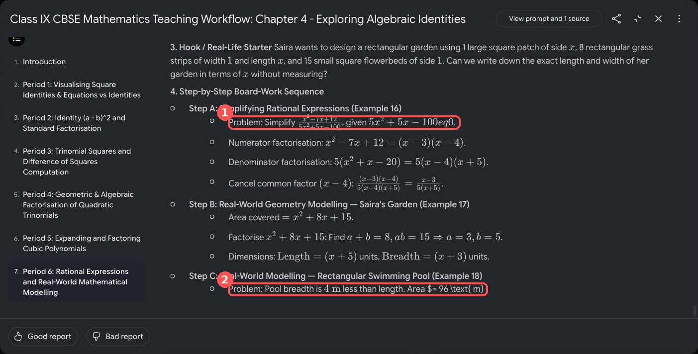
Some LaTeX also appeared raw instead of as symbols, here in a Period 4 hinge question:

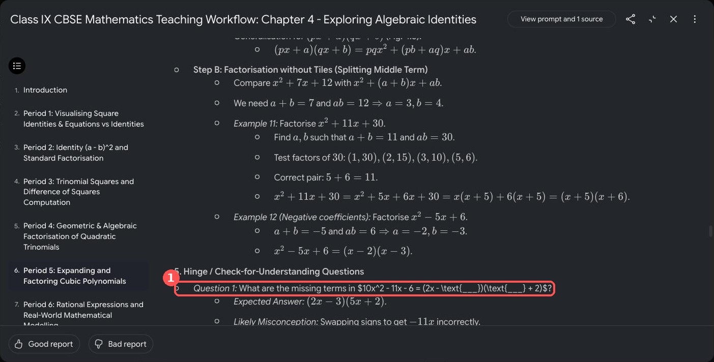
The fix was a second, narrower report. A finished report cannot be edited in place (its menu only offers Delete), and the instruction box is empty each time, so I pasted a new prompt. This one recovered the missing parts in about 90 seconds and displayed every symbol correctly:
Create ONLY the following two parts of a live-class Teaching Workflow for a Class IX CBSE Maths teacher, using only the uploaded source. Keep it concise. Part A: Period 6 in full (40 minutes) on rational expressions and real-world modelling, covering Examples 16, 17 and 18. Include: measurable learning objective, 2-3 prerequisite recall questions, a hook, step-by-step board-work sequence, 2-3 hinge questions with expected answers and likely misconceptions, one short pair activity, classwork and homework mapped to the relevant exercise sets and problem numbers in the chapter, and a 3-minute exit ticket. Part B: a closing section on common errors across the chapter, differentiation (support and extension), and competency-based question ideas. Write every mathematical symbol, including the not-equal sign, in standard LaTeX so it displays correctly.Next time, for a long chapter, I will generate a few periods at a time instead of the whole chapter in one go.
Using it in the live class
This is how I plan to run Period 6 from my follow-up report, which covers Examples 16 to 18. It fits a 40-minute period with two minutes to spare:
| Segment | Minutes |
|---|---|
| Recall questions | 3 |
| Hook: design a pool with area 96 m² | 2 |
| Board work: Examples 16, 17, 18 | 20 |
| Hinge questions | 5 |
| Pair activity | 5 |
| Exit ticket | 3 |
On my board, Example 18 will run like this: the breadth is 4 m less than the length x, so x(x − 4) = 96, which gives x² − 4x − 96 = 0 and (x − 12)(x + 8) = 0. The length is 12 m, the breadth 8 m, and x = −8 is rejected because a length cannot be negative. The report's second hinge question fits straight after it: why can you not write x = 4 or x = 96 from x² − 4x − 96 = 0?
I will print the period or keep it open beside the textbook, and teach from the textbook's own figures.
I will put the hinge questions on the board as written and listen for the misconception the report names.
I will use the exit ticket to decide how to open the next period.
My verdict
In under ten minutes I had a six-period skeleton built from the chapter's own examples and exercises. It is a first draft, not a finished lesson plan: I still check every number, fix the slips listed above, and teach from the textbook. But the blank page is gone. The most useful lesson was not a feature but a habit: pick one card for each moment of the period and ignore the rest.
If you try this on another chapter, I would like to hear what you changed. Find me on X: @RRTiwari19.
Sources
NCERT online textbooks: Class IX Mathematics, Ganita Manjari: chapter list and PDFs; includes the copyright and terms of use, opened 4 October 2026.
Gemini Notebook: all screenshots taken on 4 October 2026; menu names and options may change.